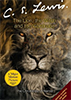

Colors
The Goodreads colors reflect the stability, warmth, relaxation, and classic format of the site. When possible, try to limit use of colors to grayscale; too much color makes it hard for readers to focus on all the text. Sections should be differentiated by their background color. Use the lightest shades of grey as background colors.
Most text should be in black. Blue is reserved for button coloring. Book titles and authors should be in dark brown.
Typography
Headings are always 21px. For main headings, use PT Serif. Always use a line underneath main headings.
Sort by: Date Added
Edit
Settings
For subheadings and secondary content headings, use Proxima nova. Do not underline secondary headings.
Nightstand
Reading (2)
To-Read (14)
Finished (55)
The most important main heading or heading item on a page may be signified in bold. Secondary headings should be in bold.
To-Read
Library
Most body copy should be 18px Proxima Nova. Authors and book titles should always be in $brown2.
To Kill a Mockingbird
by Harper Lee
Less important information, like number of books read, friend names, and activity, should be 14px. This content can either be in $grey4 or $black. Do not bold any content that is 14px.
Lee Brett
240 books
active 4 weeks ago
Images
Book covers should always have a HXW ratio of 1.4. The standard size for books is 140px by 100px.
The smaller size for books should be 100px by 71px.
On a reader’s profile page, their image should be 200px x 280x.
On a reader's profile page, in the friends sidebar, images are always square and 50px by 50px.
In the navigation bar and in a reader’s timeline, profile images should be 40px by 40px.